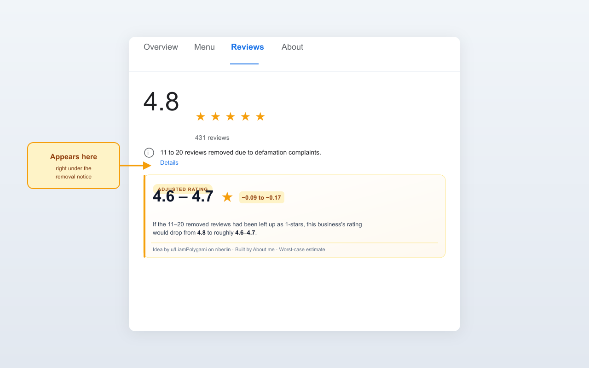

See the true Google Maps rating of any German business.
Some businesses abuse German defamation law to mass-remove critical reviews. Google now shows how many reviews were removed — Fair Rating shows you what the rating would be if they hadn't been.
Live on the Chrome Web Store. Also works on Brave, Edge, Arc and any other Chromium browser.

google.com/maps and
google.de/maps.
adjusted = (rating × total + assumed_star × removed) / (total + removed)
For capped banners ("more than 250"), the upper bound is estimated
as max(500, total × 5%) so large businesses don't get
a free pass.
Detection is keyword-based, so it works whenever Google shows the defamation notice, regardless of browser language: